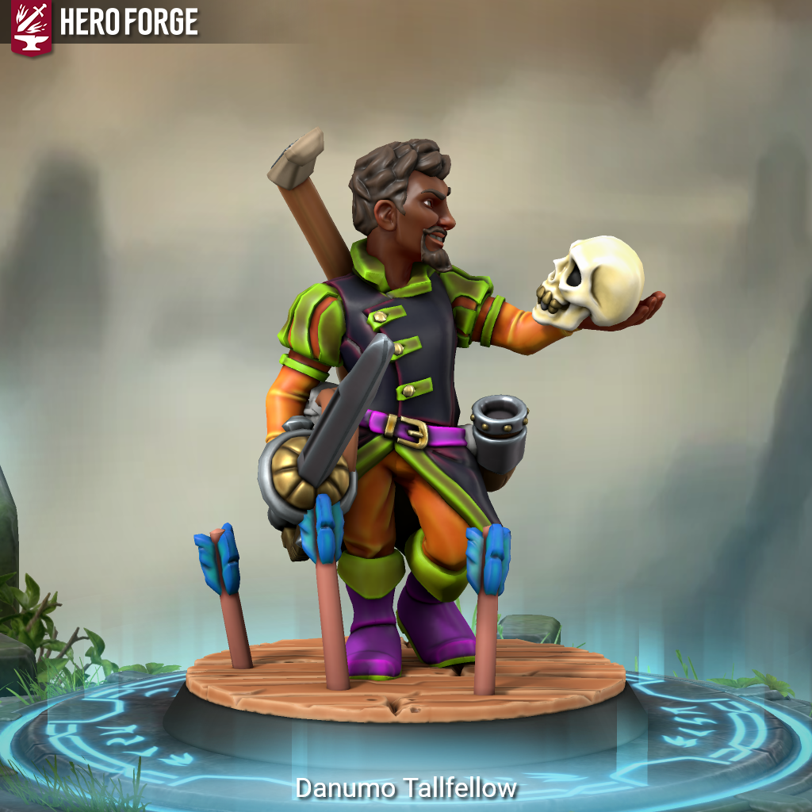

Danumo Tallfellow - Is This Anything?

Meet Danumo Tallfellow.
He started on the street. Coins in a hat, card tricks, a little sleight of hand. Then he picked up an instrument and the coins came faster. He moved inside – taverns, pub stages, dock-side crowds. Then small theaters. Then leads. Then one-man shows. Then coliseums.
There is no bigger stage than the one Danumo has already stood on. He has filled every seat in every room in every city. He is not just famous. He is beloved. He is the kind of name that makes strangers smile just by saying it.
It isn’t enough.
It was never going to be enough. He doesn’t want to maintain his fame – he wants to expand it. Into every market, every household, every corner of the known world that hasn’t heard of him yet. There aren’t many of those left. But there is one frontier he hasn’t conquered.
Adventuring.
At 5’1, he is the tallest halfling you have ever met, and he knows it. Slender, olive-skinned, with piercing green eyes and hair that enters the room a moment before he does. He has been trained in stage combat by the best stuntmen working, and he intends to find out how well that translates to something real.
Danumo Tallfellow is a Halfling Bard – performer, showman, and the most charismatic person in any room he walks into. He has never walked into a room he didn’t own.
#iTA #isThisAnything #DnD #TTRPG #Homebrew #CharacterIntro #Bard #Halfling